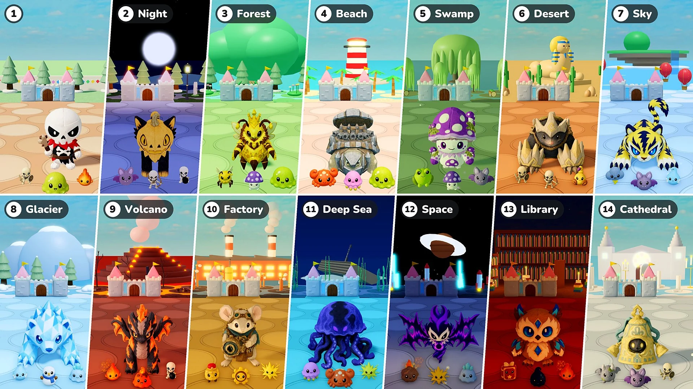

ซีซั่น 2 · อัปเดต 07 · 10 พฤศจิกายน

ป้องกันปราสาท
- ด่าน: ตอนนี้ทุก 10 รอบนับเป็นหนึ่งด่าน ด่าน 1 เป็นเมืองเล็กเหมือนเดิม ตั้งแต่ด่าน 2 แต่ละด่านจะเป็นสถานที่ต่างกัน มีแสงและสภาพอากาศ พื้นและของตกแต่ง รวมถึงมอนสเตอร์ อีลิท และบอสของตัวเอง หลังสถานที่สุดท้าย สถานที่จะวนกลับมาเริ่มจากสถานที่ของด่าน 2
- บอส: เปลี่ยนจากบอสเพิ่มหนึ่งตัวทุก 10 รอบ เป็นบอสตัวเดียวเสมอ โดยมีอีลิทเข้ามาพร้อมกันเท่ากับจำนวนบอสที่เคยเพิ่ม (1 ตัวในรอบ 15 และ 20, 2 ตัวในรอบ 25 และ 30 …) ตั้งแต่ด่าน 2 บอสและอีลิทจะเป็นตุ๊กตาของสถานที่นั้น ราชินีน้ำผึ้งก็ออกมาเป็นบอสได้แล้ว
- อีลิท: อีลิทตัวใหญ่ขึ้นเป็น 1.15 เท่า ตั้งแต่ด่าน 2 พลังชีวิตจะเพิ่มขึ้น 50% ต่อด่าน และดาวที่ดรอปเปลี่ยนจาก 10 เป็น 10 × หมายเลขด่าน (ด่าน 2 ได้ 20, ด่าน 3 ได้ 30 …)
- มอนสเตอร์ใหม่: เพิ่มมอนสเตอร์ใหม่ 16 ชนิดในสถานที่ต่าง ๆ (ค้างคาว · ปู · แมงกะพรุน · กบพิษ · แมงป่อง · เมฆพายุ · ภูตน้ำค้างแข็ง · ตุ๊กตาหิมะ · สไลม์น้ำแข็ง · สไลม์ลาวา · ทหารไขลาน · เฟือง · อุกกาบาต · หนังสือเวทมนตร์ · หยดหมึก · การ์กอยล์) แท็บมอนสเตอร์และบอสในสารานุกรมแบ่งตามด่านแล้ว
- เสริมค่าสถานะ: รอบที่ให้เลือกตุ๊กตาจะไม่มีเสริมค่าสถานะอีกต่อไป
- ตัวอัญเชิญ: แก้ไขปัญหาที่เสริมค่าสถานะไม่มีผลกับตัวอัญเชิญ ตอนนี้มีผลกับผึ้งของราชินีน้ำผึ้ง ต้นไม้ของนกต้นกล้า และร่างแยกกระจก เช่นเดียวกับตุ๊กตา และเสริมค่าสถานะที่เลือกขณะตัวอัญเชิญอยู่ในสนามจะมีผลทันที
- ความเร็ว 2 เท่า: เพิ่มปุ่ม “×2” ข้างปุ่มหยุดชั่วคราว กดแล้วการต่อสู้จะเร็วขึ้น 2 เท่า กดอีกครั้งเพื่อกลับสู่ความเร็วปกติ เวลาเลือกตุ๊กตาและการเสริม รวมถึงการเดินของอวตารยังเหมือนเดิม ใน “เล่นด้วยกัน” ไม่ว่าใครกดก็เปลี่ยนทั้งเกม
- พลังชีวิตปราสาท: แถบพลังชีวิตของปราสาทใหญ่ขึ้น และตัวเลขพลังชีวิตแสดงอยู่ข้างแถบ
ด่านและสถานที่
สถานที่ตั้งแต่ด่าน 2 พร้อมมอนสเตอร์และบอส ตุ๊กตาที่ออกมาเป็นบอสหรือบอสใหญ่ของสถานที่ จะออกมาเป็นอีลิทของสถานที่นั้นด้วย
- ด่าน 2 · กลางคืน: ค้างคาว · นักธนูโครงกระดูก · โครงกระดูกระเบิด — บอส: บลิสฟ็อกซ์ · ปุยฝ้าย — บอสใหญ่: เดรดฟ็อกซ์ · พัมพ์แคท
- ด่าน 3 · ป่า: ผึ้งงาน · เห็ดพิษ · สไลม์ — บอส: เม่นสน · แยมน้ำผึ้ง — บอสใหญ่: ราชินีน้ำผึ้ง — อีลิท: นกต้นกล้า
- ด่าน 4 · ชายหาด: ปู · แมงกะพรุน · สไลม์ — บอส: โคโคบลิน · เต่าหิน — บอสใหญ่: โรโคบลิน · เต่าเหล็ก
- ด่าน 5 · หนองน้ำ: กบพิษ · เห็ดพิษ · ค้างคาว — บอส: มัดปั๊ก · หอยทากพิษ — บอสใหญ่: บ็อกฮอร์น · เห็ดสปอร์
- ด่าน 6 · ทะเลทราย: ทหารโครงกระดูก · นักธนูโครงกระดูก · แมงป่อง — บอส: โบนิส · อุ้งเท้านุ่มนิ่ม — บอสใหญ่: โบนิกซ์ · อุ้งเท้าเหล็ก
- ด่าน 7 · ท้องฟ้า: เมฆพายุ · ค้างคาว · ภูตน้ำค้างแข็ง — บอส: โวลทิส · เพียงพอนแสงเหนือ — บอสใหญ่: โวลไทเกอร์ · กริฟฟิออน
- ด่าน 8 · ธารน้ำแข็ง: ภูตน้ำค้างแข็ง · ตุ๊กตาหิมะ · สไลม์น้ำแข็ง — บอส: กลาสซี่ · ชาร์ดฟิน — บอสใหญ่: โพลาร์ร็อก · ปริซึมแลนซ์
- ด่าน 9 · ภูเขาไฟ: ถ่านไฟ · สไลม์ลาวา · โครงกระดูกระเบิด — บอส: ฟลาโม · แอชกอน — บอสใหญ่: ฟลัมโมนิกซ์ · เอ็มเบอร์กอน
- ด่าน 10 · โรงงาน: ทหารไขลาน · เฟือง · สปาร์ก — บอส: เมาส์บอล · ติ๊กเกียร์ — บอสใหญ่: ออปติเมาส์ · ออบสกอร์
- ด่าน 11 · ทะเลลึก: แมงกะพรุน · ปู · สปาร์ก — บอส: ไฮดริส · ฟริโก — บอสใหญ่: เซเรนิส · อะบิเซล
- ด่าน 12 · อวกาศ: อุกกาบาต · สปาร์ก · สไลม์น้ำแข็ง — บอส: วอยเดรน · เอคโควิง — บอสใหญ่: วอยด์ลิ่ง · นอยส์วิง
- ด่าน 13 · ห้องสมุด: หนังสือเวทมนตร์ · หยดหมึก · ถ่านไฟ — บอส: เมลตี้ · ไบรเออราวล์ — บอสใหญ่: แคนดริก · คริสตาวล์
- ด่าน 14 · มหาวิหาร: การ์กอยล์ · ค้างคาว · ทหารโครงกระดูก — บอส: ลิลูพี · กระดิ่งน้อย — บอสใหญ่: เรเดียนท์ · ระฆังกังวาน